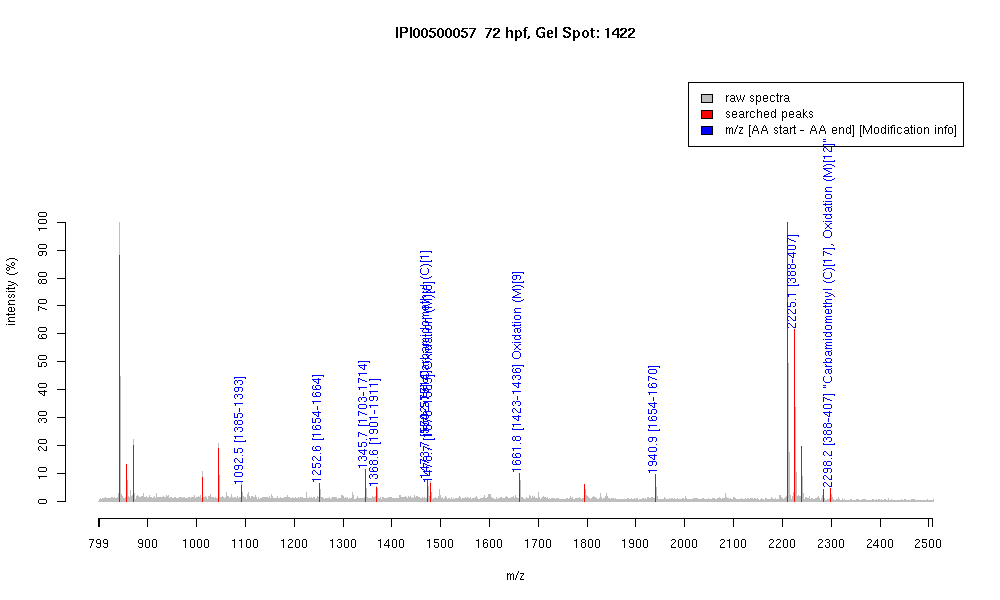

| Name | "Myosin, heavy polypeptide 2, fast musclespecific" |
|---|---|
| MW | 221742.5 |
| PI | 5.55 |
| Mascot Protein Score | 70 |
| Masses (matched / unmatched) | 10 / 14 |

| Peptide | MZ (calc) | MZ (observed) | Error (DA) | Error (PPM) | Start | Stop | Modifications |
|---|---|---|---|---|---|---|---|
| TEELEESKK | 1092.5419 | 1092.5195 | -0.0224 | -21 | 1385 | 1393 | |
| DAQLHLDDAVR | 1252.6281 | 1252.6222 | -0.0059 | -5 | 1654 | 1664 | |
| VAEQELVDASER | 1345.6594 | 1345.655 | -0.0044 | -3 | 1703 | 1714 | |
| VQHELEEAEER | 1368.639 | 1368.6335 | -0.0055 | -4 | 1901 | 1911 | |
| KVAEQELVDASER | 1473.7543 | 1473.7411 | -0.0132 | -9 | 1702 | 1714 | |
| CNAFQKPKPAKGK | 1473.7994 | 1473.7411 | -0.0583 | -40 | 564 | 576 | Carbamidomethyl (C)[1] |
| LAEKDEEMEQIK | 1478.7042 | 1478.708 | 0.0038 | 3 | 1578 | 1589 | Oxidation (M)[8] |
| LQGEVEDLMIDVER | 1661.8051 | 1661.7863 | -0.0188 | -11 | 1423 | 1436 | |
| LQGEVEDLMIDVER | 1661.8051 | 1661.7863 | -0.0188 | -11 | 1423 | 1436 | Oxidation (M)[9] |
| DAQLHLDDAVRGQEDMK | 1940.9131 | 1940.9468 | 0.0337 | 17 | 1654 | 1670 | |
| IAYLLGLNSADMLKALCYPR | 2225.1821 | 2225.1206 | -0.0615 | -28 | 388 | 407 | |
| IAYLLGLNSADMLKALCYPR | 2298.1985 | 2298.2029 | 0.0044 | 2 | 388 | 407 | "Carbamidomethyl (C)[17], Oxidation (M)[12]" |